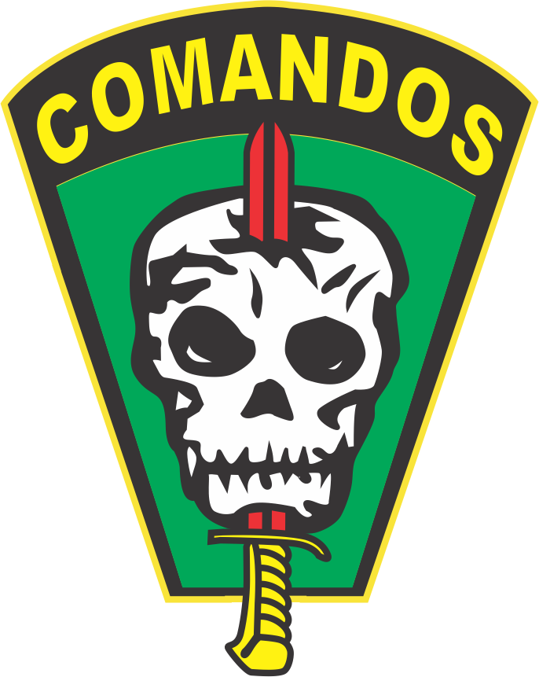
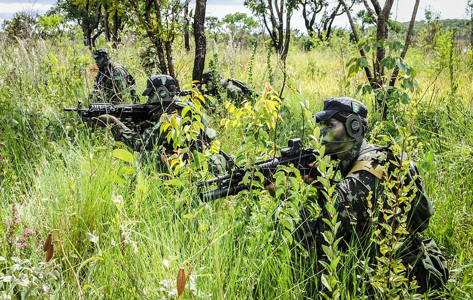
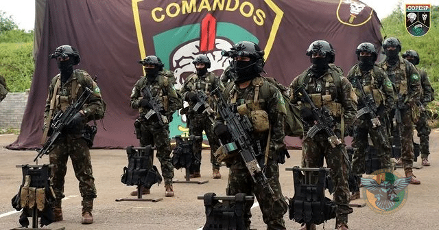
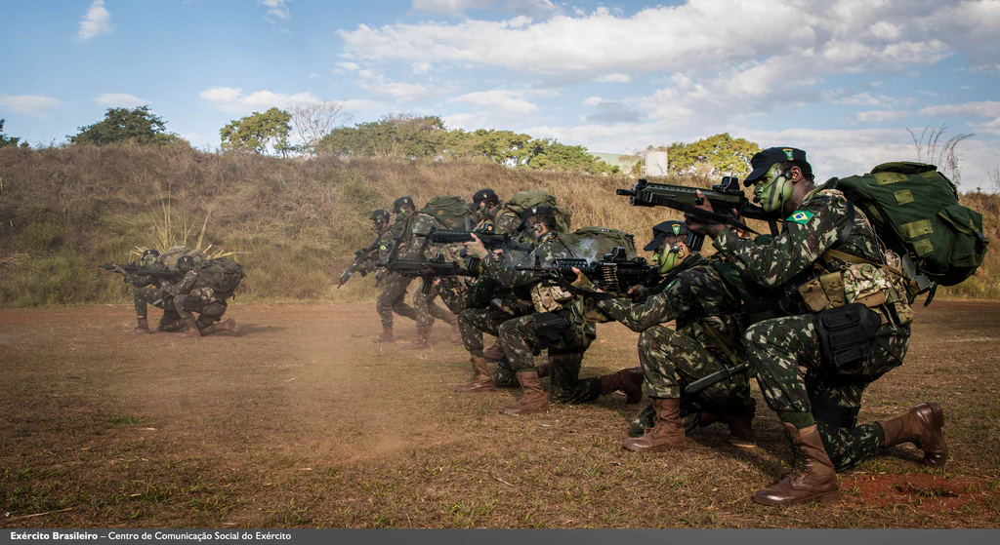

Curso de Ações de Comandos
FORJANDO PARA O PRESENTE! EDUCANDO PARA O FUTURO!

A FACA NA CAVEIRA
Este é o símbolo da tropa de Comandos do Brasil. A caveira simboliza a morte, que está sempre presente em uma Ação de Comandos. A faca com a lâmina vermelha significa o sigilo de uma missão dos Comandos e o sangue derramado pelos combatentes. O fundo verde representa as matas do Brasil, e o negro é a noite escura, momento ideal para a execução de uma Ação de Comandos.
HISTÓRIA
No Brasil, no século XVII, por volta do ano de 1624, durante as invasões holandesas, os colonos nativos foram levados a estruturar um sistema de defesa peculiar. Da união de civis e militares, sob o comando do Bispo Dom Marcus Teixeira, organizaram-se as “Companhias de Emboscadas”. Dentre os muitos brasileiros que participaram nas ações contra os invasores, destacou-se o Capitão Francisco Padilha. Brasileiro nativo, participou de diversos enfrentamentos contra os flamengos (holandeses). Emboscou pessoalmente o governador holandês Van Dorth, ferindo-o e derrubando-o do cavalo para, em seguida, a pé e em rápida ação, degolá-lo com um golpe único. Por seus feitos heroicos na defesa da Pátria e por ser considerado um dos pioneiros das atividades tipo “Comandos” no Exército Brasileiro, o Capitão Francisco Padilha foi escolhido como patrono dos Comandos. O Curso de Comandos surgiu da criação do Estágio de Comandos dentro do currículo do Curso de Forças Especiais. Na época, isso visava facilitar a participação de não paraquedistas. Foi feito a partir do currículo do “Ranger Curse” – Departamento de Rangers em Fort Bening, Geórgia. Só depois de alguns anos é que foi destacado como um curso independente.

AÇÕES DE COMANDOS
Tipo de operação especial realizada por tropa habilitada, de valor e constituição variáveis, por intermédio de uma infiltração terrestre, aquática ou aérea, contra alvos de valor estratégico, operacional ou crítico, sob o ponto de vista tático, localizados em áreas hostis ou sob controle do inimigo.

MISSÃO
O Comandos tem como missão realizar ações de captura, resgate, eliminação, interdição e ocupação de alvos compensadores do ponto de vista estratégico, operacional ou tático, situado em área hostil ou sob controle do inimigo, em tempos de paz, crise ou conflito armado, visando contribuir com a consecução de objetivos políticos, econômicos, psicossociais ou militares. Para cumprir tais missões, o batalhão é moldado de forma a ter garantidas as seguintes possibilidades: - realizar infiltrações e exfiltrações terrestres, aéreas e aquáticas; - atuar em qualquer ambiente operacional, particularmente em regiões semi-áridas, de montanha, de planalto e de selva; - conduzir o fogo terrestre, aéreo e naval; - participar em conjunto com outras FOpEsp, de operações contraterrorismo e de guerra irregular; - realizar operações contra forças irregulares; - realizar operações de reconhecimento especial, principalmente em proveito próprio; - realizar outras operações de inteligência de combate; - assessorar outras forças quanto ao emprego dos elementos operacionais de Comandos.

CURSO DE AÇÕES DE COMANDOS
O Curso de Ações de Comandos - CAC tem por finalidade qualificar oficiais e sargentos ao desempenho de funções que compõem o Cmdo Op Esp, capacitando o concluinte à agir, empregando conhecimentos militares e habilidades individuais, para superar os obstáculos, dificuldades e problemas militares apresentados, mantendo-se focado e auto-motivado, operando em missões de ações de comandos.
Possui a duração máxima de 14 (quatorze) semanas, com o emprego de técnicas, táticas e procedimentos específicos das operações especiais, atuando em ambientes operacionais variados (montanha, ambiente urbano, caatinga e selva), conduzido em ritmo de operações contínuas com esforço físico intenso e prolongado, buscando evidenciar os conteúdos atitudinais de um Comandos.
REQUISITOS
Ser voluntário, e ter requerido a inscrição dentro do prazo vigente; Se oficial, ser 2º Tenente, 1º Tenente ou Capitão de carreira das Armas, Quadro de Material Bélico, Serviço de Intendência e Serviço de Saúde; Se praça, ser 3º Sargento ou 1º/2º Sargentos, de carreira, das Qualificações Militares de Subtenentes e Sargentos (QMS), Combatente e Logística, e estar, no mínimo, no comportamento 'Bom'; Ser voluntário para servir no Cmdo Op Esp; e estar, no mínimo, há um ano na OM.

"O máximo de confusão,
morte e destruição
na retaguarda do inimigo."